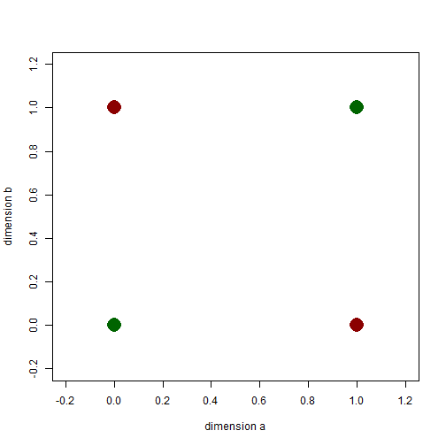
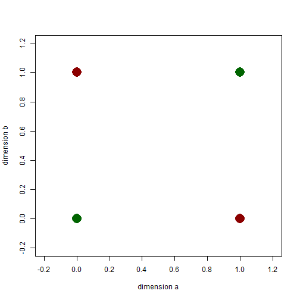
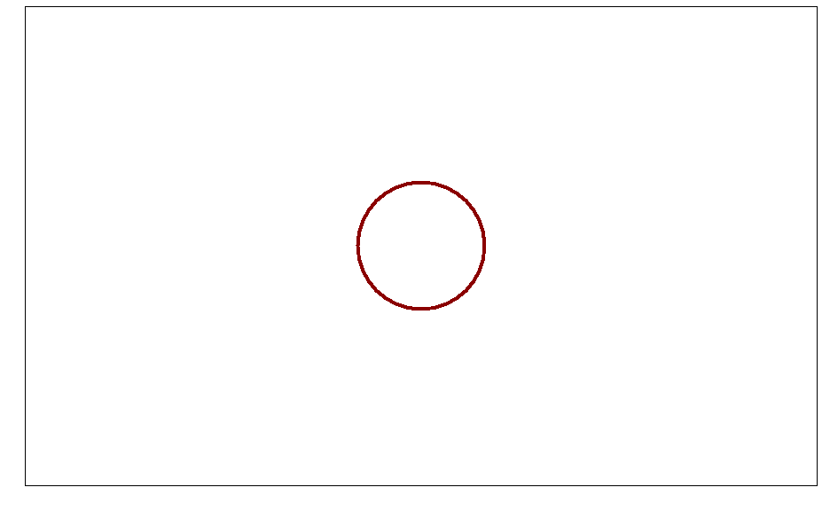
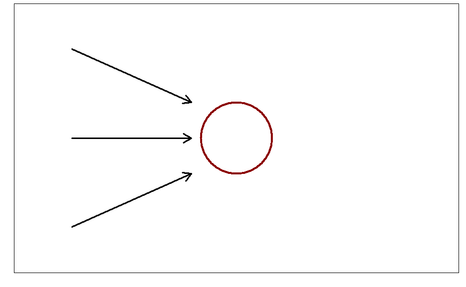

- How would we classify this problem with the methodologies we've learned thus far?
- KNN
- Naive Bayes
- Regression
- Trees
Tommy Shen

Neural nets (or neural networks) are computational models patterened after the biological processes of the brain, specifically neurons.
Neural networks allow for the modeling of complex patterns due to its ability to create deep architectures. (Spoiler: More to come in deep learning talk.)
Neural networks come in many learning paradigms:





Linear Neurons: \[y=b+\sum_{i} x_{i} w_{i}\]
Binary Threshold Neurons: \[ z = \sum x_{i} w_{i}\\ y = \begin{cases} 1 & z \geq \theta \\ 0 & \text{otherwise} \end{cases}\]
Rectified Linear Neurons: \[ y = \begin{cases} z & z \geq \theta \\ 0 & \text{otherwise} \end{cases}\]
Binary threshold is the most common choice for modeling individual neuron nodes.

inputs <- data.frame(A=sample(c(0,1), 100,replace=TRUE),B=sample(c(0,1), 100, replace=TRUE))
inputs$XNOR <- ifelse(inputs$A == inputs$B, 1, 0)
net.xnor <- neuralnet(XNOR~A+B, data=inputs, hidden=2, rep=10)

I needs more material??